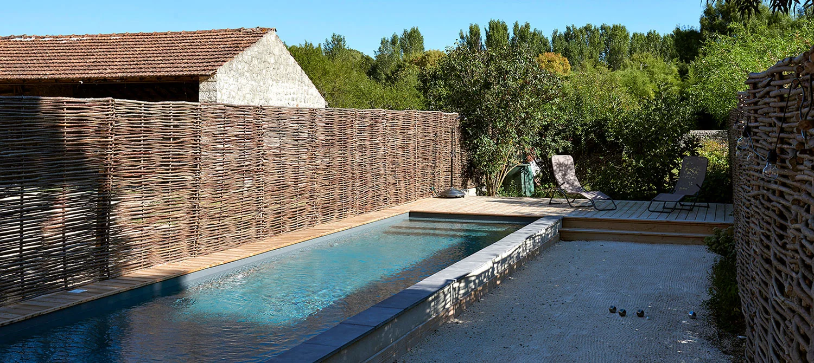

Jardin mature
Le bassin s’insère dans un paysage déjà structuré.
La piscine paysage se conçoit comme une partie du site : végétation, pierre, terrasses, orientation et architecture doivent raconter la même histoire.
Delpech met en avant l’importance des spécificités régionales, de l’orientation du terrain et du style architectural pour réussir l’intégration d’une piscine paysagée.
Le travail porte donc autant sur la forme du bassin que sur les vues, les matériaux, les circulations et la relation avec la végétation.
Les abords dialoguent avec la maison et le paysage.
Les plantations peuvent cadrer ou adoucir les vues.
L’implantation tient compte du soleil et des usages.
Le chemin entre maison, terrasse et bassin fait partie du projet.
Les visuels ci-dessous illustrent plusieurs façons d’intégrer l’eau au terrain, à la terrasse ou au bâti.
Le bassin s’insère dans un paysage déjà structuré.

Pierre, bois et végétation renforcent l’intégration.

Les abords créent une vraie pièce à vivre extérieure.
Photos du terrain, orientation, usages attendus et style de la maison permettent déjà de cadrer un premier échange.